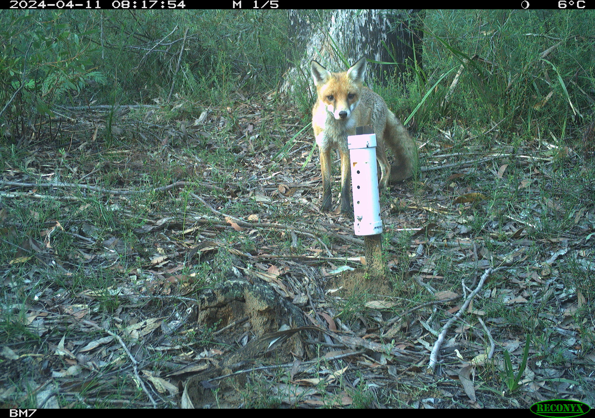
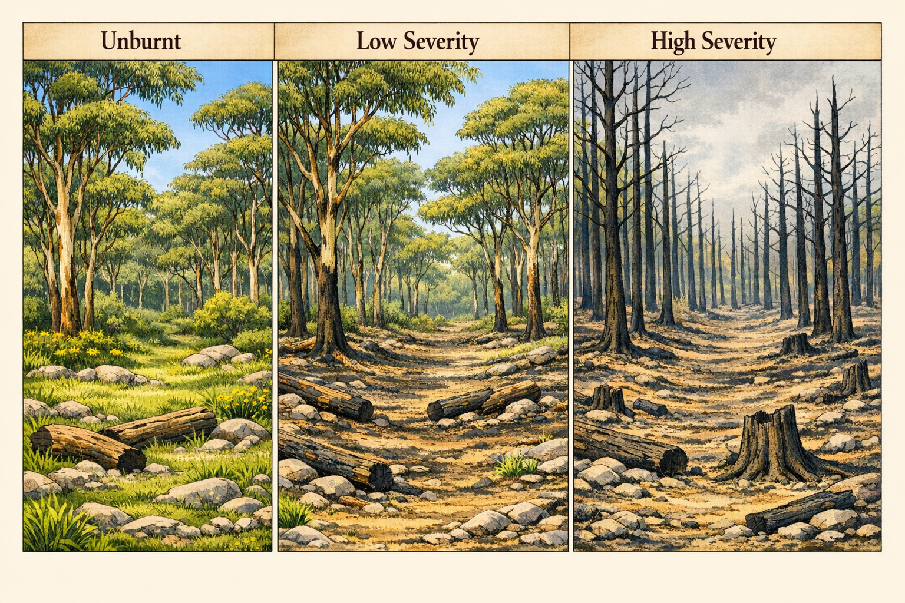

Welcome!
This week we will analyse two experiments using one-way ANOVA: a completely randomised design investigating dingo and fox activity from camera trap data, and a randomised complete block design examining fire severity effects on small mammal abundance.
You will come across Exercises in this lab. Solutions will be posted on Friday evening.
Learning outcomes
In this lab, we will learn how to:
- Use R to analyse CRDs and RCBDs.
- Assess the usefulness of blocking.
Specific goals
By the end of this lab, you should be able to:
Preparation
This lab uses emmeans. Install it if you are missing it by running the following in the console:
Downloads
| File | Used in | Download |
|---|---|---|
crd_dingo_fox_exclusion.csv |
Section 1 | Download |
rcbd_mammals.csv |
Section 2 | Download |
Save the files into a folder called data inside your project folder.
1. Completely randomised design (~25 min)
You are tasked with analysing data from an experiment that investigated the effect of dingo activity on fox activity. You set out camera traps at 36 sites for 36 days at sites with high, medium and no dingoes (exclusion). You recorded the number of foxes that were captured on camera. Our measure of activity is the number of images per 100 trap nights. This was calculated by:
FoxRatePer100 = \frac{FoxDetections}{TrapNights} \times 100

We predict Higher fox activity → lower dingo activity based on mesopredator release hypothesis.
Data is in the crd_dingo_fox_exclusion.csv file.
- Experimental units: Sites (randomly assigned to treatments; no blocking)
- Factor: DingoActivity (3 levels: High, Medium, Exclusion)
- Response: FoxRatePer100 (images per 100 trap-nights)
- Replicates: n = 12 sites per treatment (36 total)
Other variables:
- SiteID: unique identifier for each site
- TrapNights: number of nights the camera trap was active at each site (max of 36, but some cameras surveyed for less)
- FoxDetections: number of images of foxes captured by the camera trap at each site
Statistical model for CRD: Y_{ij} = \mu + \alpha_i + \epsilon_{ij} Where:
- Y_{ij} is the observed fox activity (FoxRatePer100) at the j-th site in the i-th dingo activity level.
- \mu is the overall mean fox activity across all dingo activity levels.
OR:
fox\ activity = overall\ mean + dingo\ activity + random\ error.
Analysis
Exercise 1
(i) Test the assumptions of the ANOVA and transform the data (if needed). Hint first run the model using the aov() function and then use the plot() function to check the assumptions.
(ii) Use an ANOVA to analyse the CRD and report on the results.
(iii) Explore any significant results using post-hoc tests from emmeans package and its emmeans() function. Include any plots that you think are useful to visualise the results.
Before we move on, now is a good time to take a 5-minute break.
2. Randomised complete block design (~25 min)
A researcher designs a study to investigate the effect of fire treatment (unburnt, low severity and high severity) on small mammal abundance. They set up four blocks (Block_1, Block_2, etc) and select sites that were unburnt, low severity and high severity fire within each block. At each site to survey small mammal abundance. The data is in the rcbd_mammals.csv file.

Analysis
Exercise 2
(i) Write out the statistical model for the ANOVA model for this experiment. Define all the terms in the model. You can write out in words or in mathematical notation.
(ii) Test the assumptions of the ANOVA and transform the data (if needed). Hint first run the model using the aov() function and then use the plot() function to check the assumptions.
(iii) Use an ANOVA to analyse the RCBD and report on the results.
(iv) Explore any significant results using post-hoc tests from emmeans package and its emmeans() function. Include any plots that you think are useful to visualise the results.
(v) Calculate the variation explained by the blocking term.
Conclusion
Closing thoughts
We analysed two experimental designs this week: a CRD using camera trap data to test the mesopredator release hypothesis, and an RCBD examining fire severity effects on small mammal abundance. These designs and analysis techniques will continue to be used as we work with more complex models throughout the course.
Attribution
This lab was developed using resources that are available under a Creative Commons Attribution 4.0 International license, made available on the SOLES Open Educational Resources repository.